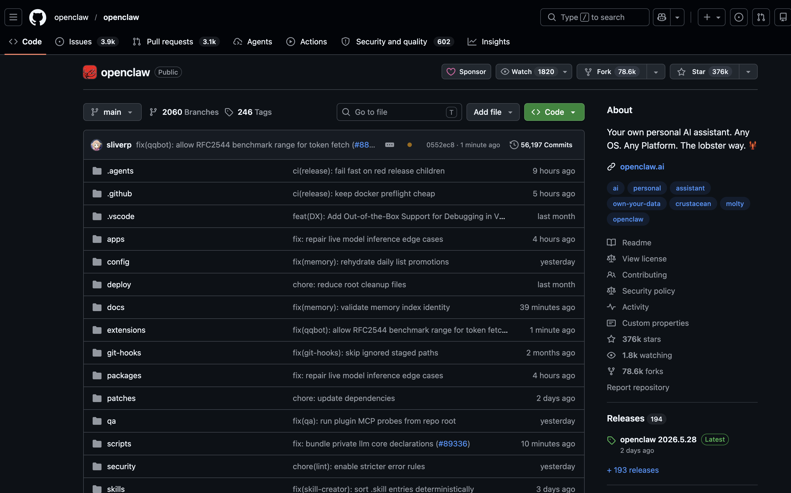
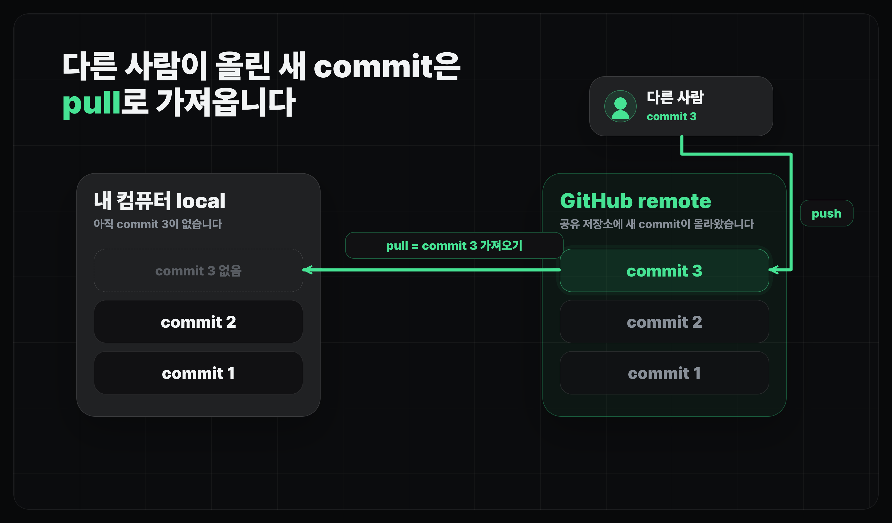
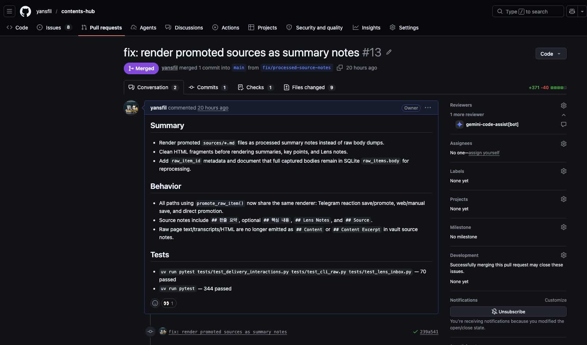

코드 버전 관리하기 (Git & GitHub)
GitHub 사용법 익히기
로컬 Git 저장소를 GitHub 원격 저장소와 연결하고 첫 push 흐름을 익힙니다.
얻어갈 것
- GitHub, remote repository(원격 저장소), push/fetch/pull의 개념을 파악합니다.
- 우리 프로젝트를 GitHub에 올리는 것까지 실습을 진행합니다.
GitHub란
- Github은 전세계에서 가장 많이 사용하는 원격 코드 저장소입니다.
- GitHub의 중심은 repository(저장소)입니다. 그 위에 협업, 이슈, PR, 배포 연동 같은 기능이 붙습니다.
- Git으로 관리한 코드를 GitHub에 올리면, 내 컴퓨터 밖에서도 같은 코드를 확인하고 이어서 작업할 수 있습니다.
Repository, Local과 Remote
Repository는 한 프로젝트의 코드와 변경 기록을 모아두는 저장소입니다.
git init으로 내 컴퓨터 안에 local repository(로컬 저장소)를 만들었습니다.- GitHub에서 새 repository를 만들면 인터넷에 remote repository(원격 저장소)가 생깁니다.
- README는 이 프로젝트가 무엇이고, 어떻게 실행하는지 적어두는 첫 안내문입니다.

- local repository는 내가 작업하는 실제 프로젝트 폴더입니다.
- remote repository는 같은 프로젝트를 GitHub에 올려둔 복사본이라고 보면 됩니다.
- 둘을 연결하면 내 컴퓨터에서 만든 commit을 GitHub로 올리고, GitHub에 올라온 commit을 다시 내 컴퓨터로 가져올 수 있습니다.

push, fetch와 pull
push, fetch, pull은 local repository와 remote repository의 commit 흐름을 맞추는 명령입니다.
Terminal
git remote -v # 현재 연결된 GitHub 저장소 확인 git branch # 현재 로컬 브랜치 확인 git fetch origin # GitHub에 새 commit이 있는지 가져와서 확인 git push -u origin main # 처음 main 브랜치를 GitHub로 올릴 때의 예시
- push는 내 컴퓨터에서 만든 commit을 GitHub로 올리는 일입니다.
- fetch는 GitHub에 새 commit이 있는지 확인하고, 원격 상태만 가져오는 일입니다. 내 작업 파일은 바로 바뀌지 않습니다.
- pull은 GitHub의 새 commit을 가져와서 내 현재 branch에 합치는 일입니다.
Pull Request
Pull Request(PR)는 branch 변경을 main에 합치기 전에 변경 범위를 검토하는 공간입니다.
- PR 화면에서는 변경된 파일, commit 목록, 코드 diff, 리뷰 코멘트를 같이 볼 수 있는 검토 환경입니다.
- AI에게 만든 기능을 PR 단위로 정리하게 하면, 내가 직접 모든 파일을 열어보지 않아도 변경 범위를 파악하기 쉽습니다.
- 큰 기능이나 배포 전 변경은 PR로 한 번 묶으면 변경 범위를 확인하기 쉽습니다.

실습
- GitHub에 가입하고 로그인합니다.
- GitHub CLI인 gh를 설치합니다. 직접 하기 어렵다면 Claude Code에게 설치를 도와달라고 합니다.
- 새 터미널을 열어서
gh auth login으로 GitHub에 로그인합니다. - 새 repository를 만듭니다. 저장소 이름은 프로젝트 이름과 비슷하게 두면 나중에 찾기 쉽습니다.
- Claude Code나 Codex에게 현재 프로젝트와 GitHub 저장소를 연결해달라고 요청합니다.
Terminal
gh auth login # GitHub CLI 인증 시작 (브라우저 로그인 방식 추천) gh auth status # 어떤 계정으로 로그인됐는지 확인
-
GitHub CLI를 방금 설치했다면 VS Code 통합 터미널에서
gh명령을 못 찾을 수 있습니다. -
이때는 VS Code를 재실행하거나, 별도 터미널을 새로 열어서 로그인합니다.
-
gh auth login을 실행하면 몇 가지를 물어봅니다:GitHub.com선택 → 프로토콜은HTTPS또는SSH→Login with a web browser를 고르면 됩니다. -
터미널에 표시되는 코드를 복사해 자동으로 열린 브라우저에 붙여넣고 Authorize를 누르면 인증이 끝납니다. 한 번 해두면 다시 묻지 않습니다.
P1GitHub 저장소 연결시키기
현재 로컬 프로젝트를 방금 만든 GitHub repository와 연결하려고 해. GitHub repository 주소는 아래와 같아. [여기에 GitHub repository URL 붙여넣기]
- 연결 후에는
git remote -v로 GitHub 주소가 맞는지 확인합니다. - 첫 push가 끝나면 GitHub 화면을 새로고침해서 파일 목록과 commit 기록이 올라왔는지 봅니다.
마무리
- GitHub는 Git을 바탕으로 코드를 공유하고, 배포 서비스와 연결하는 기준점입니다.
- 이번 레슨에서는 local repository와 remote repository를 구분하고, 내 프로젝트를 GitHub에 올리는 흐름을 잡았습니다.
- 다음 레슨에서는
.gitignore, reset, stash처럼 Git을 조금 더 안전하게 쓰기 위한 도구들을 봅니다.